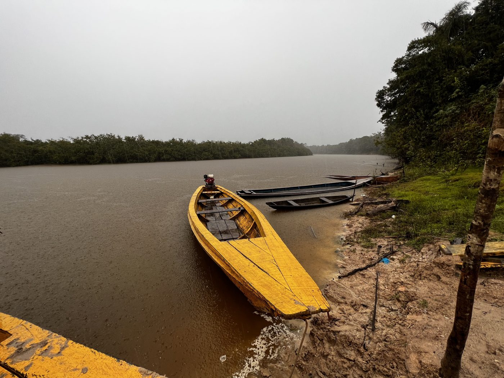

More than 20 years of nonprofit leadership, communications, and fundraising — applied on behalf of the organizations doing environmental protection work, and the funders who support them.
Organizational strategy support shaped by two decades of hands-on experience on the ground, with stakeholders, and in leadership roles across environmental protection and social impact.
Messaging and campaign planning that helps you reach your target audience.
Engaging teams in structured processes designed to strengthen management, inclusion, governance, and programmatic impact.
Compelling, well-researched proposals grounded in a deep understanding of the funding landscape and tailored to the funder's requirements.
Opportunity identification, partner vetting, and market analysis that helps funders allocate resources with confidence and purpose, not just urgency.
On-the-ground experience across four regions and program areas. Our work spans environmental protection, social advocacy, and campaigns; public-private partnerships; monitoring, evaluation & learning (MEL); fiscal compliance and institutional grant reporting (USG, EU, multilateral funders); and event strategy and implementation at Conference of the Parties (COP).
United States & Canada
Sub-Saharan Africa
In support of Indigenous and Local communities in Latin America & the Congo Basin
New horizons
Emerging focus
Blue Planet Contact works with US-based organizations, and with international organizations seeking US-based financing.
“With every drop of water you drink, every breath you take, you’re connected to the sea.”